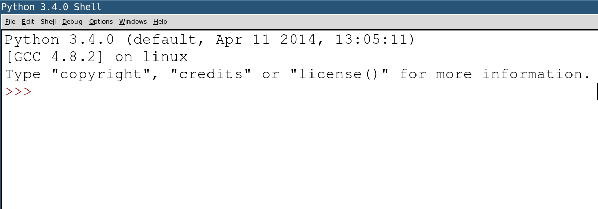

Code School
1 Introduction
- Any problem that can be solved by a computer requires the application of only three different programming constructs: Variables, If statements (known as conditionals) and while loops.
- There are many other tools and techniques that can be used when programming to help solve problems more elegantly (e.g. functions, classes, databases, parallel processing), but the three core concepts are essential.
- In this unit, you'll work through a series of simple exercises which will help you apply these ideas in different ways to solve problems yourself.
- In this first lesson, we'll cover the first third of the knowledge needed to be 'Turing Complete' by playing with variables.
- We'll use Python 3, but these prolems could be solved in any other Turing Complete language.
- The year 7 'Touring Turing' unit covers all the main constructs, and can be viewed here. You'll find this an excellent reference for this topic, and are encouraged to refer to it.
- The Harvey Mudd College in the US has an excellent CS primer that you can see here.
- This topic is inspired by the popular Project Euler challenges:
- If you're working on this at home, you can pick up Python (for free) here:
- Python 3.4 for Mac
- Python 3.4 for Windows
- If you need Python 3 for Linux - use your package manager
sudo apt-get update && sudo apt-get install python3 idle3(on Ubuntu for instance) - If you're working in school, then you should find a program called IDLE, in your programs menu.
2 Integral Integers
Learn It
- Open up IDLE. You should be presented with a screen that looks a little like this:

- IDLE is an Integrated Development Environment (IDE) for Python. This means we can create, edit and run Python files using it.
- The screen that popped up is called the
INTERPRETER. Remember this, and what it looks like. - We can write code in the interpreter, and it gets executed straight away. This is handy for trying out ideas on the fly.
Code It
- Integers are whole numbers (e.g. -5, 0, 9, 42…)
- Type (copying and pasting all the lines at once won't work) the following:
firstNum = 2 secondNum = 3 addedNums = firstNum + secondNum multipliedNums = firstNum * secondNum sumsWithNums=(3*(firstNum * firstNum)) / addedNums
- Note: Once you have hit
ENTERyou can not delete what has been executed, any more than you can unbreak an egg. If you make a mistake, just type it out again (or hitalt+pon your keyboard to bring up the last command again, and alter it from there. - We've written some commands and these have been carried out. The computer knows the results, but none of the results are shown.
- We need to instruct the computer to print the results…
print(addedNums) print(multipliedNums) print('The last answer is ' + str(sumsWithNums))
- The last instruction builds a short
String, so that we get more user-friendly feedback. - A string is anything we want the computer to treat as text. We need to wrap strings in quotation marks so that Python doesn't treat them as variables.
- The the last line above, the
sumsWithNumsvariable is an integer. 'The last answer is ' is a string. To use theprint()function, we need to send it everything as the same data type. We use thestr()function to tell Python to treat the answer as a string.
Try It
- Let's play Countdown, but use the computer to do the calculations rather than jotting them down on paper. Start by storing the variables below.
a = 2 b = 5 c = 7 d = 13 e = 18 f = 26
- See if you can solve the following, using the rules from TV's Countdown:
- Make the target number, or get as close as you can
- You can use as few or as many of the numbers as you want
- You can only use a number once
- You can only use +, -, * and /.
- e.g. If I wanted to make 116, I could do this…
step1= f * b step2 = a * c result = step1 - step2 print(result)
- Try and solve these, printing the result to the screen…
- 14
- 70
- 1
- 234
- 425,880
- What do you get if you do (a+b+c)+(d*e*f)?
- Set a target number (that you know you can make) for the person next to you
3 String Theory
Try It
- Let's look at strings for a moment
- Type these lines into the interpreter, or paste them in one at a time:
foo = 'Hello' bar = ' ' baz = 'World' print(foo + bar + baz)
- A
characteris a single letter, number or punctuation mark (e.g. 'h') - We can pick out the individual characters by giving Python the index of the character we want, or even a range of indices. Remember that while humans like to count starting at 1, computers tend to start at 0. Try this:
print(foo[0]) print(baz[1:3]) print(foo + bar + baz) newWord = baz[0:3] + baz[4] print(newWord)
- By manipulating the contents of
foo,barandbaz, create the following strings in different variables and print them. Feel free to recylcle previous variables to solve the last one.- 'WWW'
- 'He'
- 'Held'
- 'He Held WWW World'
Learn It
- Python is full of different functions we can use to help us out when we try and code different things.
- One example is
input(), which allows us to collect user input from the keyboard so we can make programs more interactive. The data entered by the user is stored as a string. - Another is
len(). This returns the length of any string that is entered as an integer. This can be really handy. - Rather than working in the interpreter, we'll create a short program this time. In the IDLE window, click
File, thenNew - Save this empty window straight away, and call it
pyInput.py - Now copy and paste this code:
yourName=input('What is your name: ') faveNumber=input("What's your favourite number? ") faveNumber = 2 * int(faveNumber) print(str(faveNumber/2) + " is good, but " + str(faveNumber) + " is twice as good.") nameLength=len(yourName) print('Let me tell your something interesting, ' + yourName) print('Your name has ' + str(nameLength) + ' characters in it') lastLetter=yourName[nameLength-1:nameLength] print('The last letter of your name is ' + lastLetter + '.')
- Save the program (either
FilethenSaveor use the keyboard shortcutCtrl+S, then hit theF5key to run it - If
str()tells Python to treat something as a string (so we can show numbers inprint()statements, for instance), what do you thinkint()is doing in the third line of code (faveNumber = 2 * int(faveNumber))? - Describe to the person next to you what the penultimate (one before last) line of code is doing.
- Why does the program need to use
len()in order to work?
- Finally, we can use the
findfunction to locate specific strings in other strings. If it finds the string you're looking for (a space in the example below), it returns an integer with its location. If it can't find it, it returns -1. For instance:
yourName=input('Enter your first and last name (e.g. John Smith): ') whereIsTheirSecondName=yourName.find(" ") print("Hi " + yourName[0:whereIsTheirSecondName])
4 Badge It
Assessment
- Create Python program files, and complete as many of the following as you can:
- Silver. Complete two tasks
- Gold. Complete four tasks
- Platinum. Complete six tasks
- Task 1: Wordsmith
- Ask the user to type three words, and store them in three variables
- Store the first letter of the first word, the second letter of the second and the third letter of the third in one variable
- Print a message to the user, saying 'Your new word is ' and the new word your program invented in the previous step
- Task 2: Times table
- Ask the user for a number.
- Print out the multiplication table for that number, going up to 12x. E.g.
- Give me a number: 5
- 5
- 10
- 15
- etc
- Task 3: Tidy tables
- Complete task 2, then improve the layout to look like this…
- Give me a number: 5
- 1 x 5 = 5
- 2 x 5 = 10
- 3 x 5 = 15
- etc
Task 4: The greeter
- Ask the user for their title (e.g. Miss), first name (e.g. Susan) and last name (e.g. Boyle).
- Print their fully name (e.g. Miss Susan Boyle)
- Print their initials (e.g. 'S.B.'), with full stops between them
- Print their name using their first initial (e.g. Miss S. Boyle)
- Print a showbiz style name (e.g. SuBo) by taking the first two letters of both names, and concatenating them (i.e. sticking them together).
Task 5: Index hero
- Store 'the quick brown fox jumps over the lazy dog' as a variable
- Store the word 'python' in a new variable, by using only the previous variable
- Print the contents of your new variable.
Task 6: Finders Keepers
- Ask the user to enter three words
- Break up the words, and show them in turn.
- "Enter three words:" How are you"
- First word: How
- Second word: are
- Third word: you
- Tip: If I was doing this, I'd start by locating the first word, and store the remaining two in a new variable.